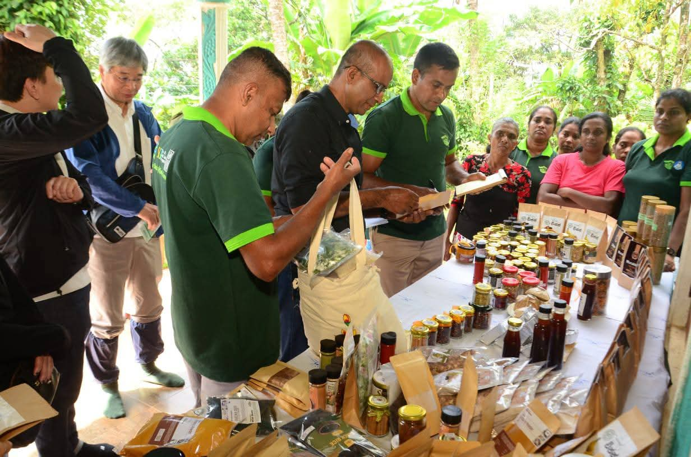
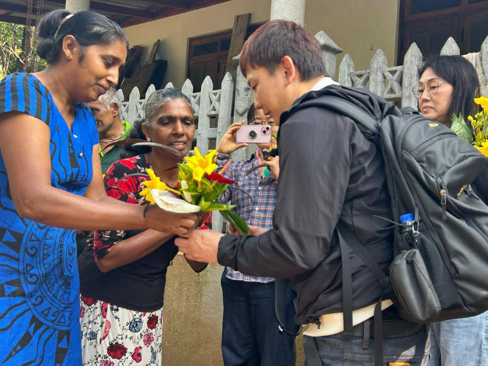
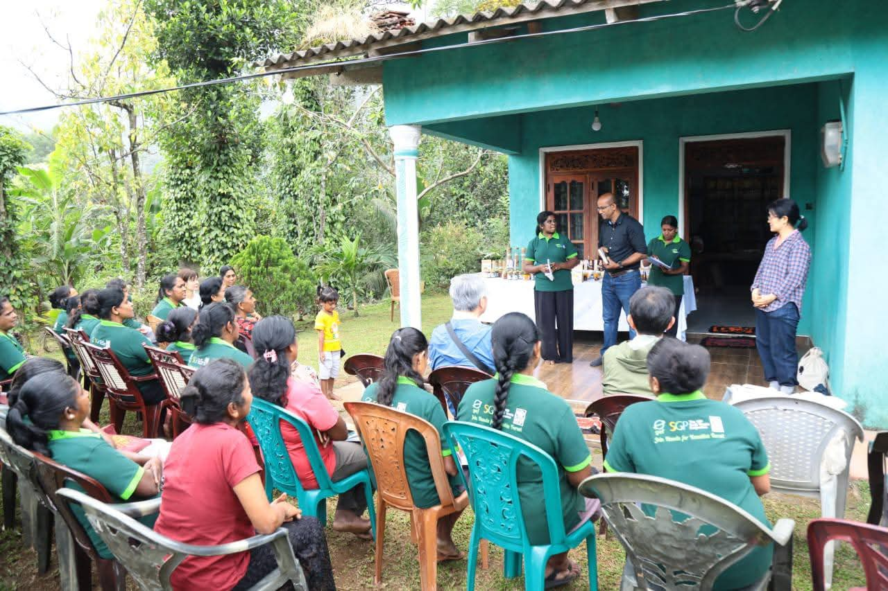

Women & Community Enterprise
Wild Roots Community Enterprise Development
Wild Roots emerged from CDC-supported community development in Ududumbara, where women leaders and entrepreneurs transformed local knowledge, traditional foods, and collective effort into new livelihood opportunities.
UdudumbaraAbout this initiative
Women turning local knowledge into lasting opportunity
Supported through GEF/SGP-linked community action and CDC guidance, Wild Roots reflects resilience, confidence, and the strength of local enterprise. The initiative connects women’s leadership, value-added food production, indigenous food knowledge, and community collaboration into a practical livelihood pathway. In Ududumbara, where communities have weathered difficult times, Wild Roots represents a collective determination to build forward — not simply to recover, but to create something new and lasting from the knowledge and relationships that already exist within the community.
Focus Area
Women-led community enterprise and livelihood development
Location
Ududumbara
Community Purpose
To help women and community entrepreneurs build confidence, strengthen skills, and create value-added products rooted in local knowledge.
Project Gallery
Women, products, and the community behind Wild Roots







Why It Matters
Livelihood Grows When It Grows from the Community
Livelihood development becomes stronger when it grows from the community itself. Wild Roots shows how local knowledge, women’s leadership, and shared effort can become practical enterprise, creating opportunity while preserving food traditions and community pride.
- Women-led community enterprise rooted in Ududumbara
- Local food and value-added products developed from indigenous knowledge
- Skills, confidence, and livelihood development for women and community entrepreneurs
- Products introduced and developed through community collaboration
- Connection between traditional food knowledge and sustainable income opportunities
Explore more CDC projects
CDC’s work continues across conservation, food security, livelihoods, recovery, water access, education, and community enterprise.